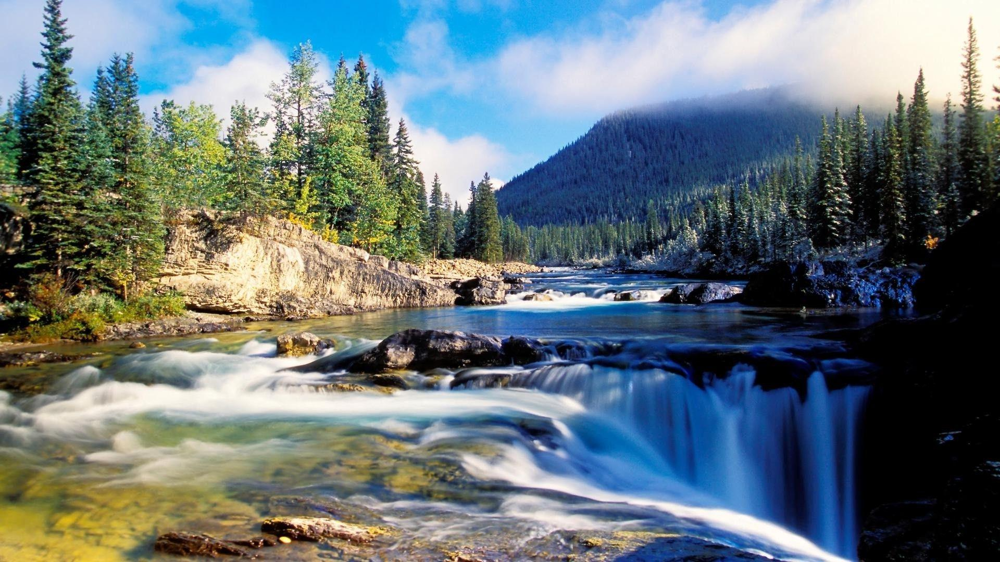

1.Alleppey (Alappuzha)

There is the whole of Kerala on one side, and then there is this heavenly tourist destination called Alappuzha or Alleppey! Esteemed as the ‘Backwater Capital of India’ or the ‘Venice of the East’,Alleppey is known for its silent backwaters and bountiful beauty! Seated on the banks of the azure Vembanad Lake, it is one of the most popular backwater destinations in Kerala and one of the highest sought-after tourist places in Kerala. Visit this paradise; enjoy a houseboat cruise and stay,village walks, Ayurvedic therapies, and a lot more!
2.Wayanad
Cradled in the lap of the Western Ghats, Wayanad truly deserves a top rank in the list of places to visit in Kerala. Situated at an astounding height of 700-2,100m, this stunning hill station is all about fantasy, untouched nature, unforgettable moments, and merriment! Adding more to Wayanad’s enchanting beauty, visitors can also revisit and unfold history while visiting this hilly retreat. Yes, the lush and pristine forests in Wayanad are said to be inhabited more than 3,000 years ago.